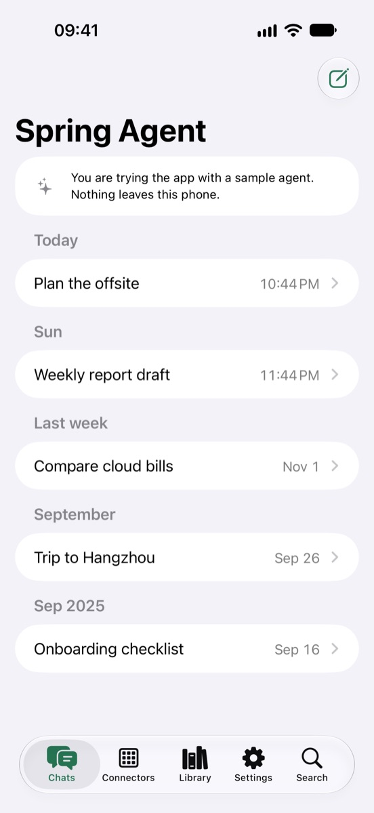
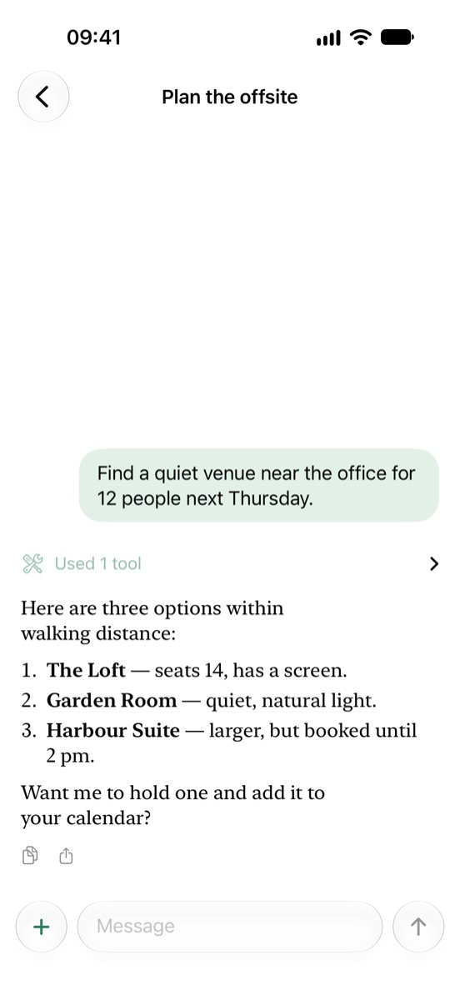
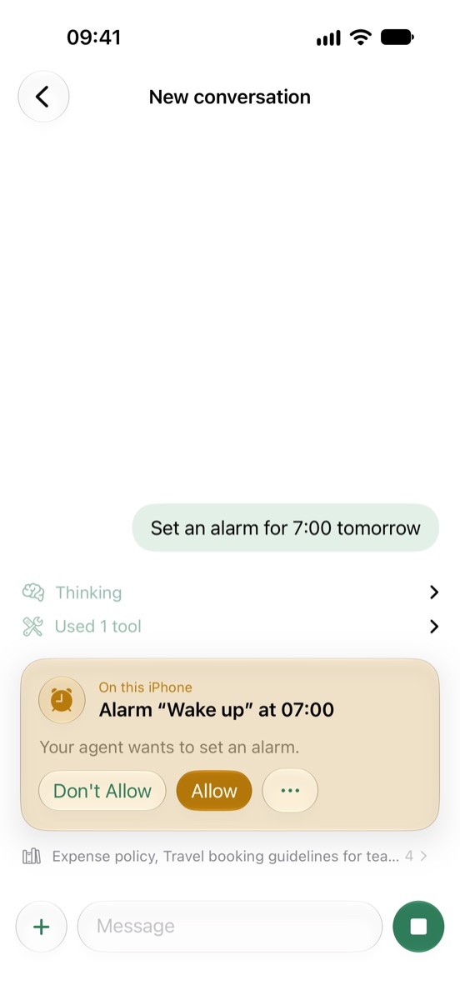
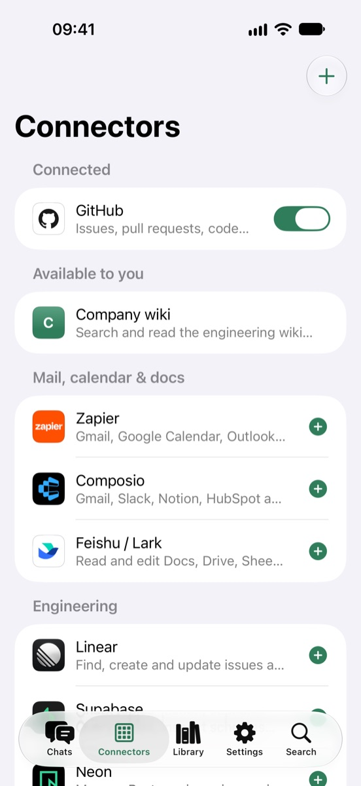
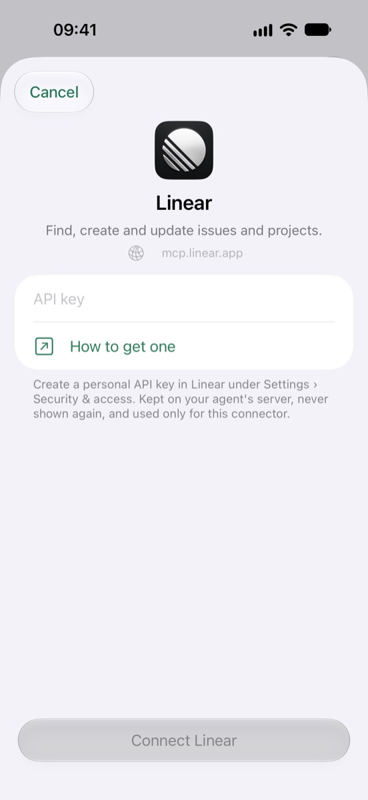
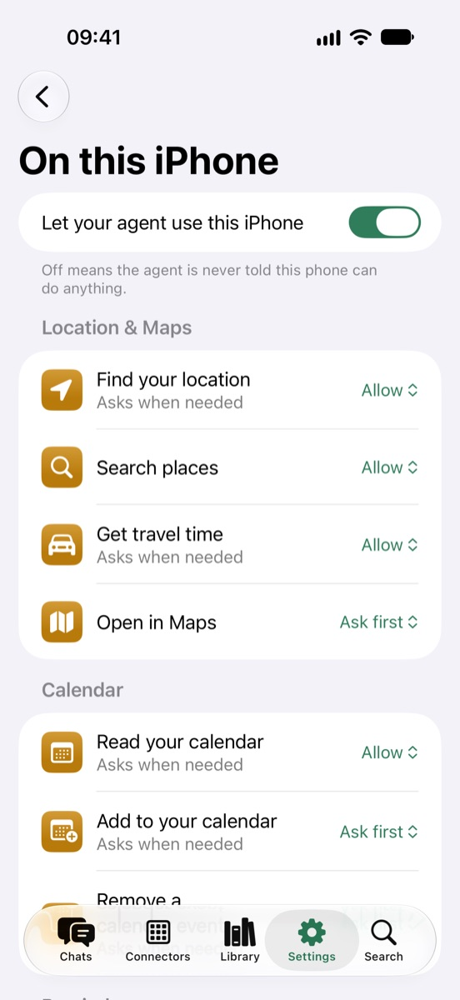
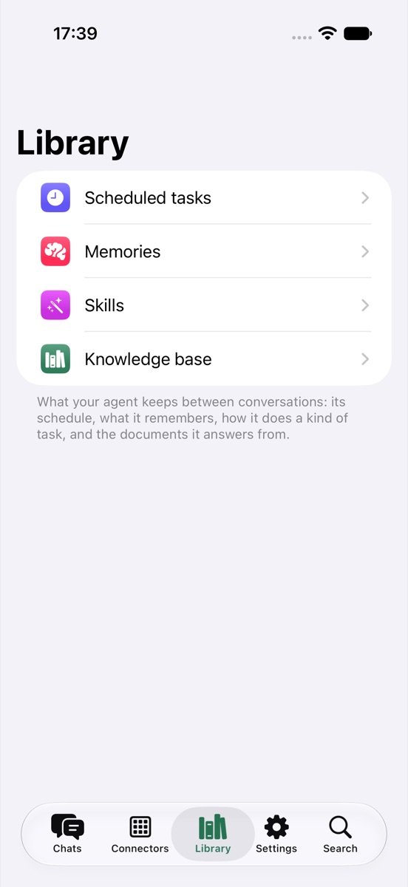
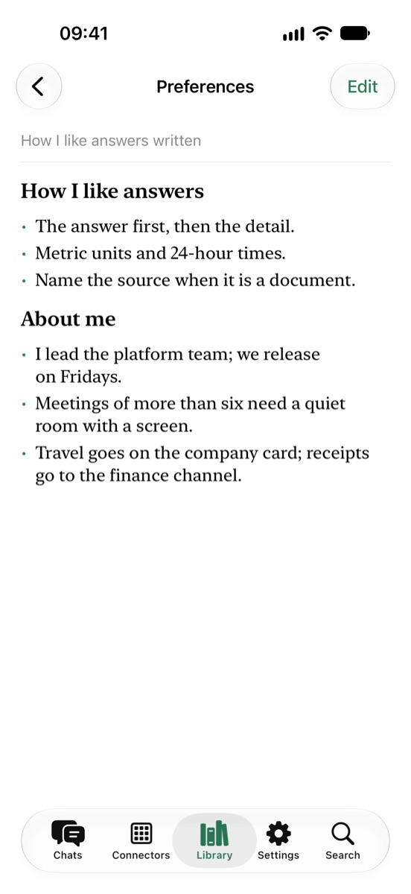

Your own AI agent, in your pocket.
Spring Agent is the iPhone app for the agent you run yourself. Chat with it, follow every step it takes, and let it use your phone when a task needs it — always with your say-so.

Spring Agent is the iPhone app for the agent you run yourself. Chat with it, follow every step it takes, and let it use your phone when a task needs it — always with your say-so.

The agent keeps running on your own server. The app is a window onto it — and a pair of hands when a task needs this phone.
Streaming replies, with the agent's thought process, every tool it used and the sources it read one tap away.
Location, calendar, reminders, alarms, Health, contacts and photos. The agent asks here first, and you choose per tool how freely it may act.
Plug the agent into GitHub, Linear, Stripe, Zapier, Feishu and more through MCP — or any MCP server of your own.
Scheduled tasks, memories, skills and knowledge documents: what your agent keeps between conversations, readable and editable.
The app talks only to the server you sign in to. No analytics, no tracking, and on your own server, no account with us.
A built-in sample agent shows everything the app does, entirely on your phone.







Talking to your agent, and letting it read your calendar or location, is free. Pro lets it change things on this phone — alarms, events, reminders, Health logging, drafts of mail and messages — and turn on more than three connectors.
No server of your own? Spring Agent Cloud runs your agent for you, with everything in Pro. The app needn't be open: when a task needs this phone, the request waits up to a day instead of failing. What you've allowed runs in the background; for anything set to ask first, a notification asks you to tap and allow, and the conversation carries on. You're also notified when your agent has a question for you or an answer is ready.
per month
per year, with a one-week free trial for new subscribers
US prices; the App Store shows yours. Subscriptions renew automatically unless cancelled at least 24 hours before the end of the period, in Settings › Apple Account › Subscriptions. See the Terms of Use.
Questions, bugs or ideas: open an issue on GitHub, or write to contact@kezhenxu94.me. To run your own agent server, start with the Spring Agent repository.